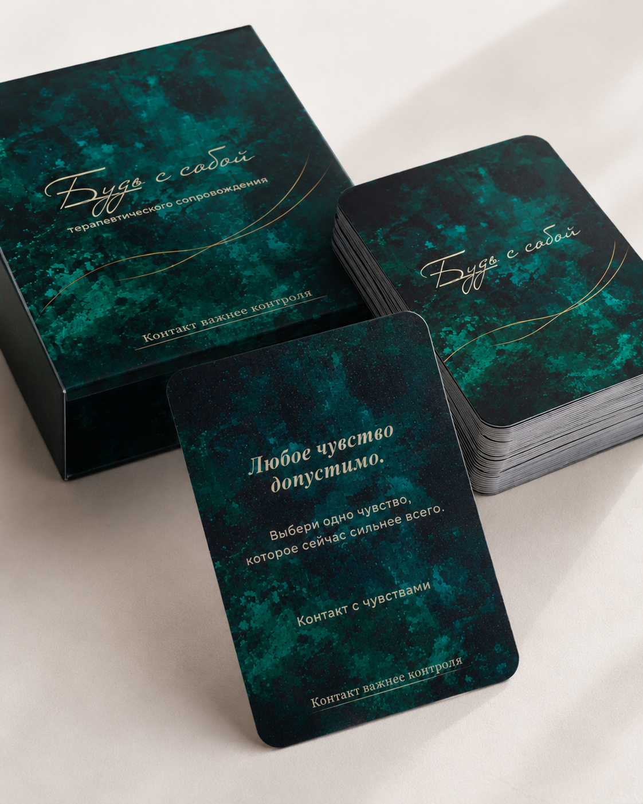
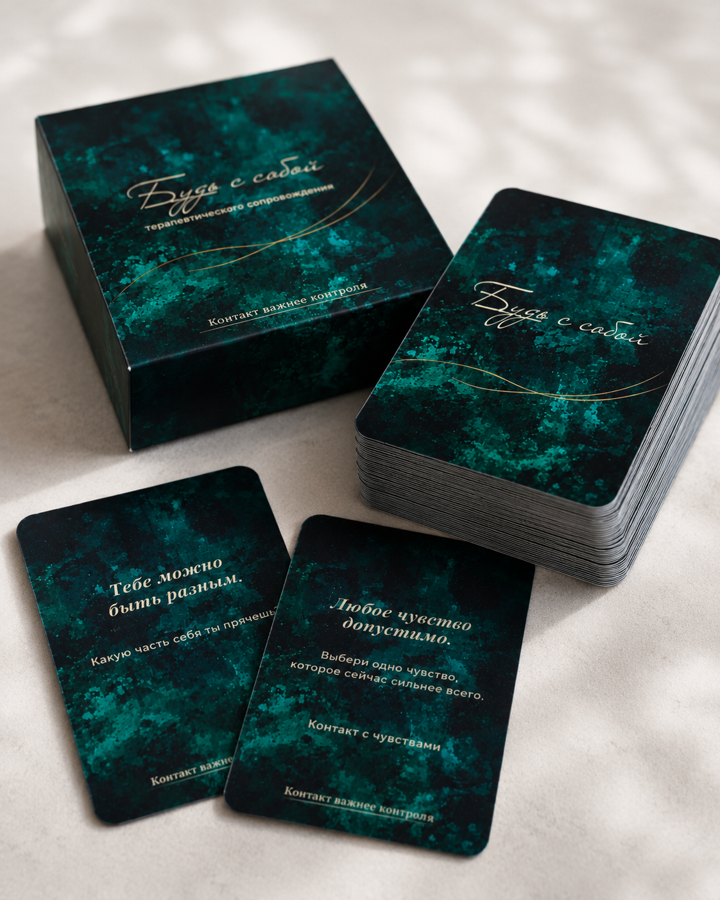

Карта саморефлексии
✦Ты можешь не знать ответа.
Где ты уже всё понимаешь, но не решаешься признать?
Контакт важнее контроля
Диана Ким
Колода терапевтического сопровождения
60 карт терапевтического сопровождения: мягкие фразы, честные вопросы и практики, которые дают опору.
Мягкость — это сила. Честность — это выбор.
Это не про «исправить себя». Это про услышать себя.

Минута для себя
Перед тем как открыть карту, сделайте один спокойный вдох и спросите себя: что мне сейчас важно услышать?
Карта саморефлексии
✦Где ты уже всё понимаешь, но не решаешься признать?
Контакт важнее контроля
Сегодня открыто: 0 из 3
Внутри колоды
60 карт терапевтического сопровождения: мягкие фразы, честные вопросы и практики, которые дают опору.
Бережный способ заметить своё состояние и вернуться к внутренней опоре.
Слова поддержки, которые помогают быть на своей стороне.
Вопросы, которые помогают услышать себя без давления и спешки.
Короткие действия через дыхание и тело, возвращающие контакт с собой.
Вкладыш-инструкция
Это не про поиск правильных ответов. Это про контакт с собой.
Главный принцип колодыНе ломать себя. А мягко возвращаться к себе.
Сформулируйте внутренний запрос или просто спросите: что мне важно увидеть сегодня?
Выберите 1–3 карты и запишите ответы: эмоции, телесные ощущения, внутренние реакции.
Если карта содержит практику — не пропускайте её. Иногда опора возвращается не через анализ, а через тело.
Карту можно использовать как вход в сессию, углубление или мягкое завершение.
Возможно, это для вас
Для тех моментов, когда хочется чуть меньше шума снаружи и чуть больше ясности внутри.

Полная версия
60 карт терапевтического сопровождения: мягкие фразы, честные вопросы и практики, которые дают опору.
Вытяни одну карту. И начни с себя.
Индивидуальный формат
Если вы хотите не просто открыть карту, а глубже разобраться в своём состоянии или запросе, можно прийти на индивидуальную встречу. Через карту мы мягко выходим к тому, что сейчас важно увидеть, назвать и поддержать.
Вернуться к себе
Откройте карту, прислушайтесь к отклику — и если почувствуете, что хотите глубже, напишите Диане.